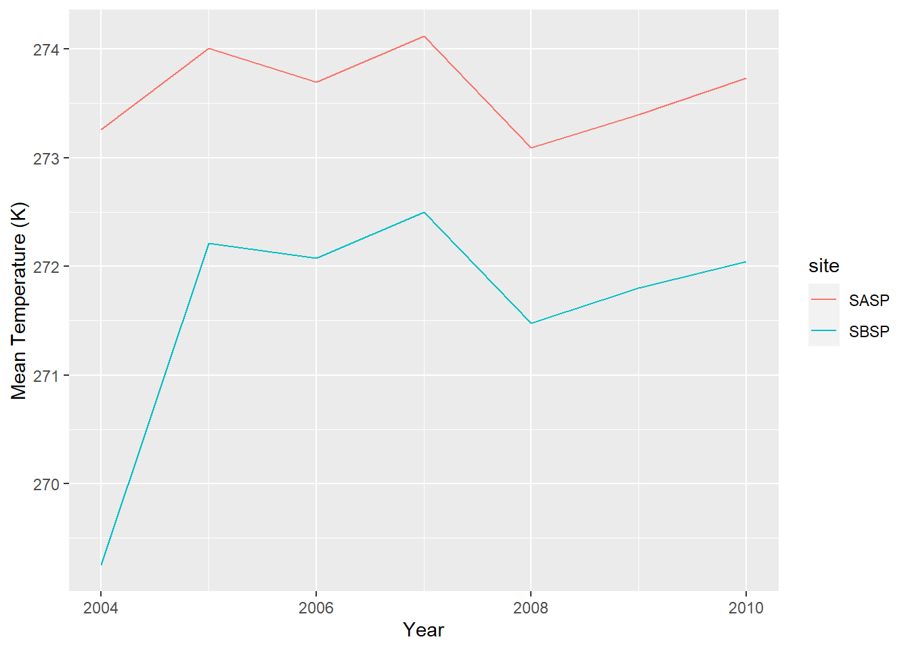
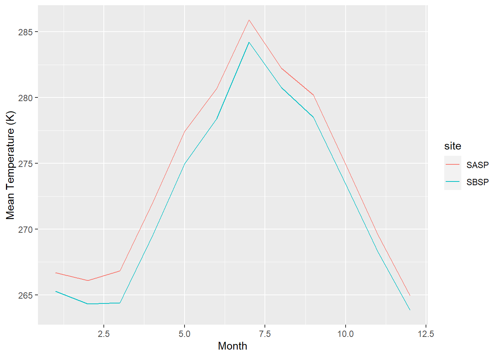
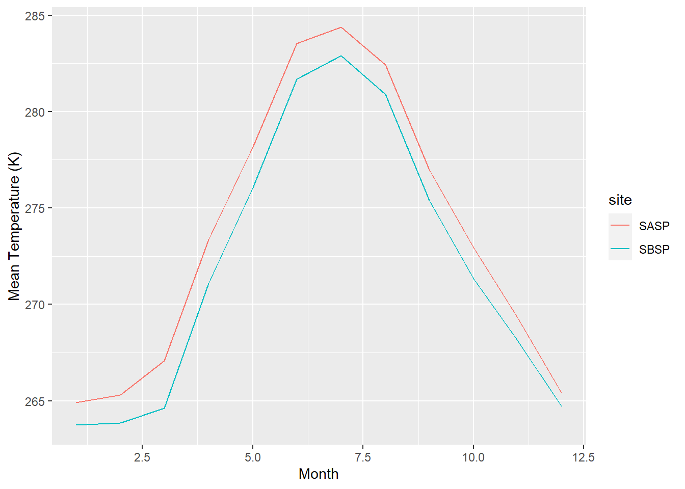
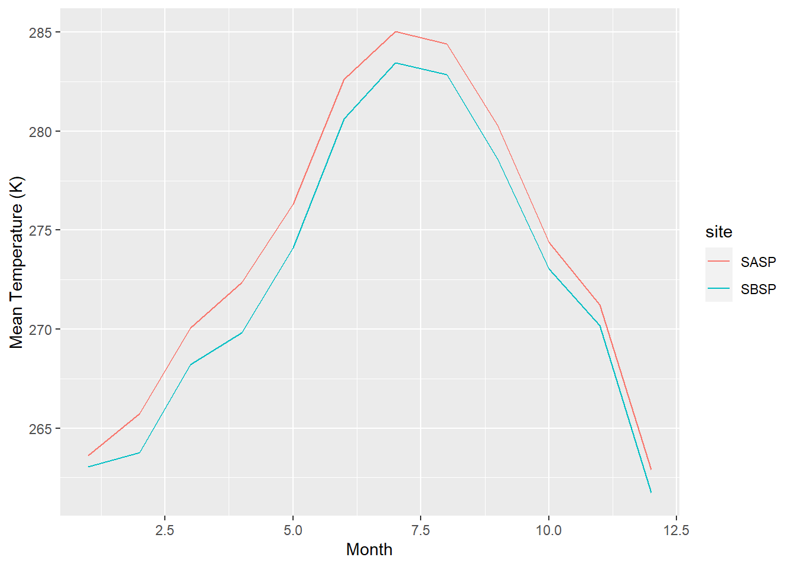
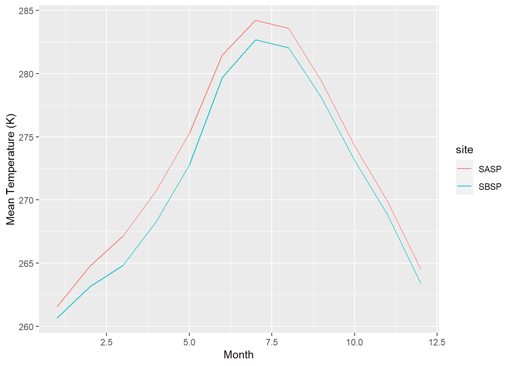
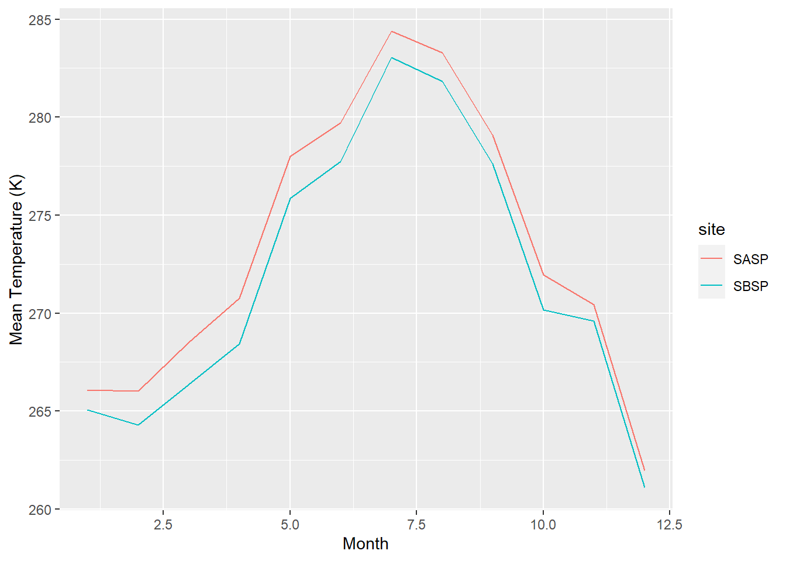
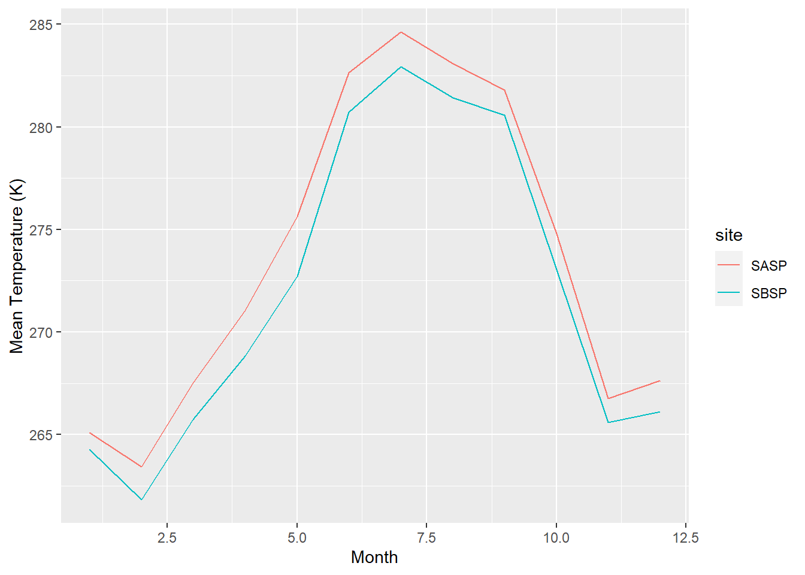

Chapter3 3: Webscraping and Iterations
3.1 Assignment:
- Extract the meteorological data URLs. Here we want you to use the
rvestpackage to get the URLs for theSASP forcingandSBSP_forcingmeteorological datasets.c
## Warning in dir.create(datapath): 'data' already existssite_url <- 'https://snowstudies.org/archived-data/'
#Read the web url
webpage <- read_html(site_url)
links <- webpage %>%
html_nodes('a') %>%
.[grepl('forcing',.)] %>%
html_attr('href')
#Grab only the name of the file by splitting out on forward slashes
splits <- str_split_fixed(links,'/',8)
#Keep only the 8th column
dataset <- splits[,8]
# view(dataset)
file_names <- paste0(datapath,dataset)- Download the meteorological data. Use the
download_fileandstr_split_fixedcommands to download the data and save it in your data folder. You can use a for loop or a map function.
#generate a file list for where the data goes
file_names <- paste0('data/',dataset)
for(i in 1:2){
download.file(links[i],destfile=file_names[i])
}
downloaded <- file.exists(file_names)
evaluate <- !all(downloaded)- Write a custom function to read in the data and append a site column to the data.
# this code grabs the variable names from the metadata pdf file
library(pdftools)
headers <- pdf_text('https://snowstudies.org/wp-content/uploads/2022/02/Serially-Complete-Metadata-text08.pdf') %>%
readr::read_lines(.) %>%
trimws(.) %>%
str_split_fixed(.,'\\.',2) %>%
.[,2] %>%
.[1:26] %>%
str_trim(side = "left")read_in_weatherdata <- function(file){
name = str_split_fixed(file,'_',3)[,2]
df <- read.delim(file, header = F, sep = "", skip =4) %>% mutate(site = name)
return(df)
}- Use the
mapfunction to read in both meteorological files. Display a summary of your tibble.
setwd("~/Spring 2022/ESS580/3_snow_functions_iteration/data")
weather_data_full <- map_dfr(dataset, read_in_weatherdata)
weather_data_full <- select(weather_data_full, V1, V2, V10, site)%>% rename(Year = V1, Month = V2, temp = V10)
summary(weather_data_full)## Year Month temp site
## Min. :2003 Min. : 1.000 Min. :242.1 Length:138336
## 1st Qu.:2005 1st Qu.: 3.000 1st Qu.:265.8 Class :character
## Median :2007 Median : 6.000 Median :272.6 Mode :character
## Mean :2007 Mean : 6.472 Mean :272.6
## 3rd Qu.:2009 3rd Qu.: 9.000 3rd Qu.:279.7
## Max. :2011 Max. :12.000 Max. :295.8- Make a line plot of mean temp by year by site (using the
air temp [K]variable). Is there anything suspicious in the plot? Adjust your filtering if needed.
weather_data_yearlymean <- weather_data_full %>% group_by(Year,site) %>% filter(Year != 2003, Year != 2011) %>% summarize(meantemp = mean(temp))ggplot(weather_data_yearlymean, aes(x = Year, y = meantemp, color = site )) +
geom_line() +
labs( x = "Year", y = "Mean Temperature (K)")
The dataset only included parts of 2003 and 2011, which skewed the yearly average for both years.
- Write a function that makes line plots of monthly average temperature at each site for a given year. Use a for loop to make these plots for 2005 to 2010. Are monthly average temperatures at the Senator Beck Study Plot ever warmer than the Snow Angel Study Plot? Hint: https://ggplot2.tidyverse.org/reference/print.ggplot.html
# create a function
yearly_plotter <- function(df, year){
monthly_mean <- df %>%
group_by(Year, Month, site) %>%
summarize(meantemp = mean(temp)) %>% filter(year == Year)
figure <- ggplot(monthly_mean, aes(x = Month, y = meantemp, color = site )) +
geom_line() +
labs( x = "Month", y = "Mean Temperature (K)")
print(figure)
}# run the function in a for loop
x <- c(2005, 2006, 2007, 2008, 2009, 2010)
for(year in x){(yearly_plotter(weather_data_full, year))}